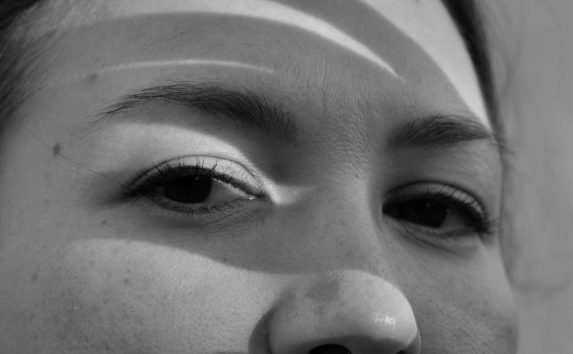
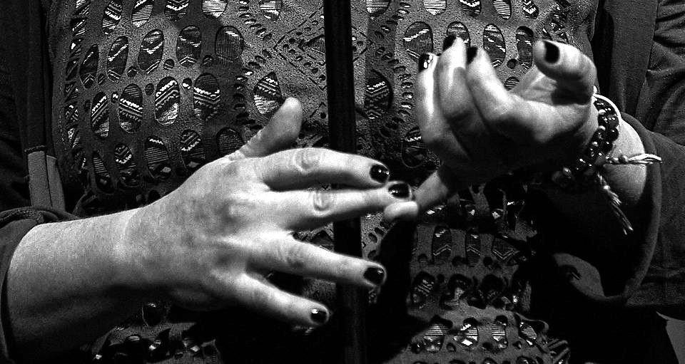
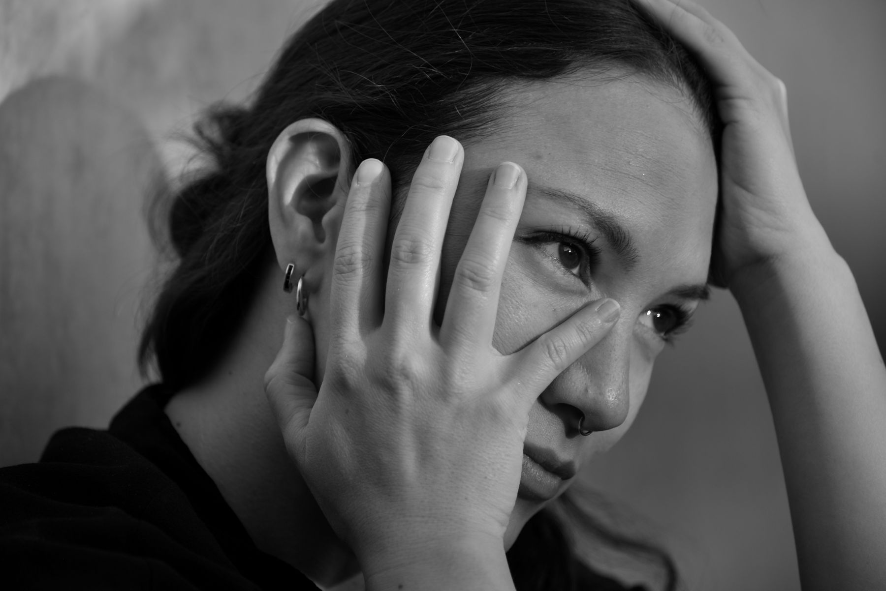
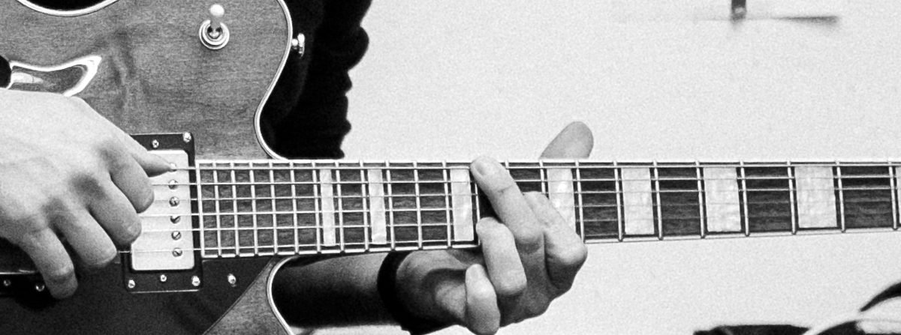
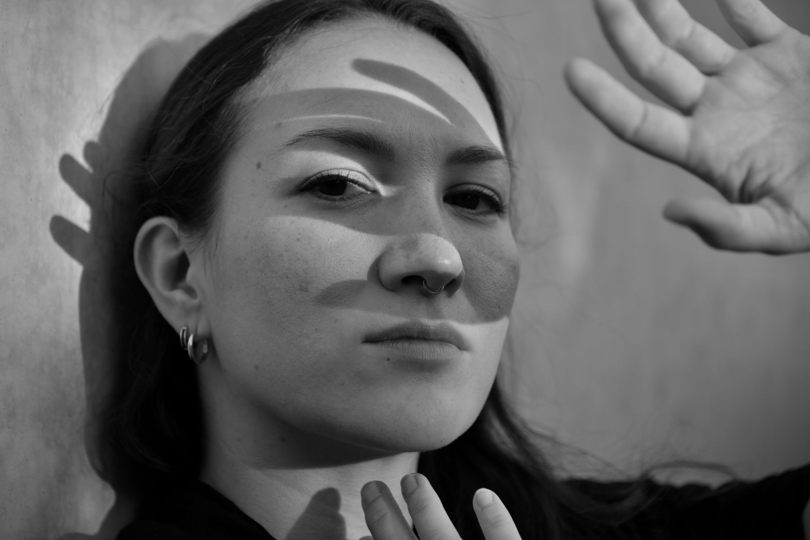
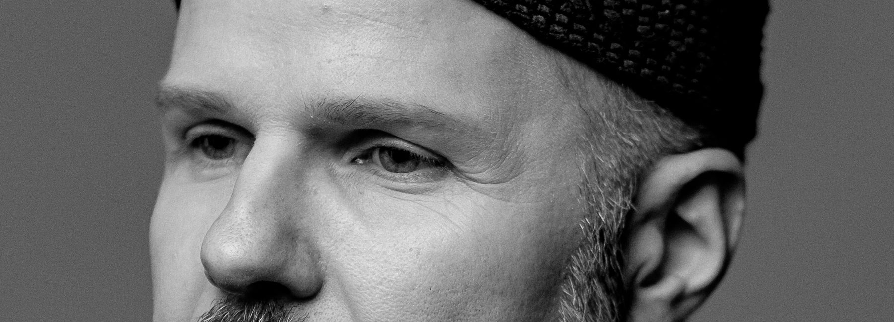
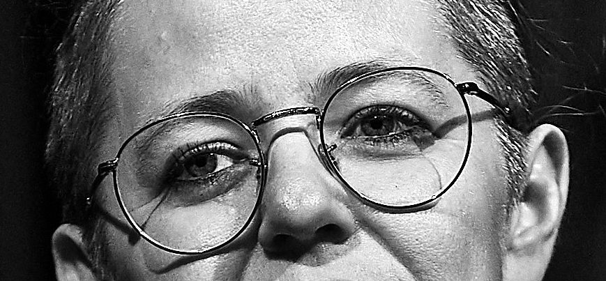
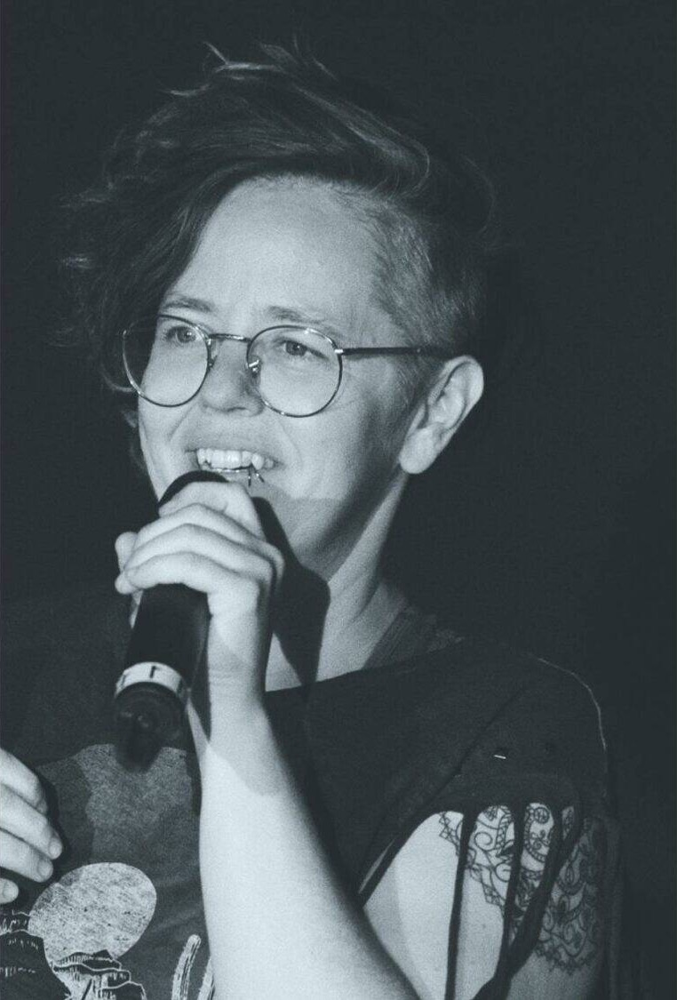
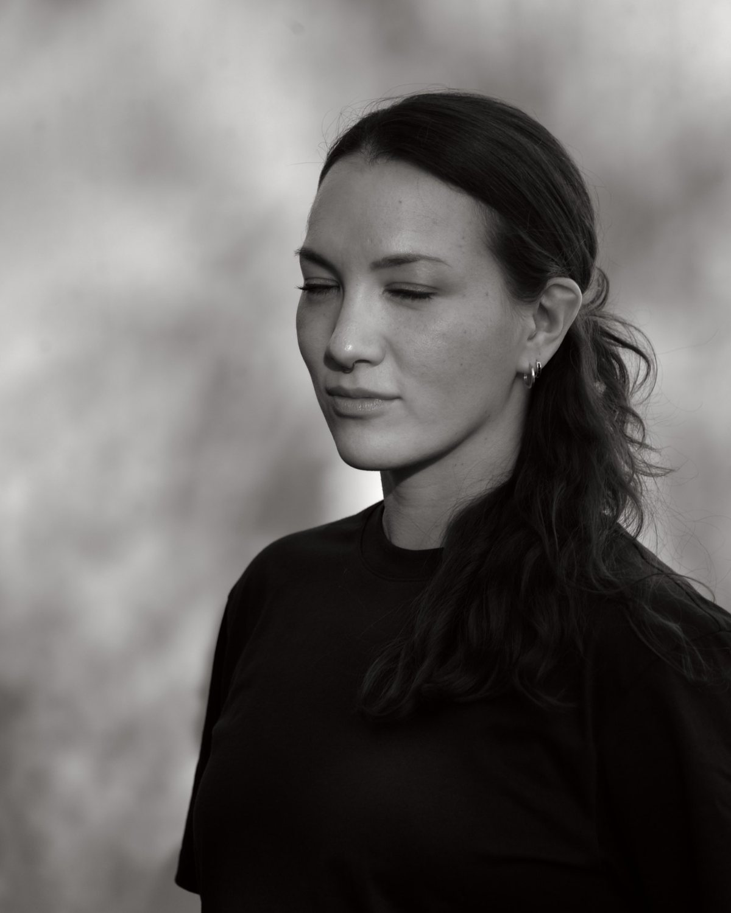
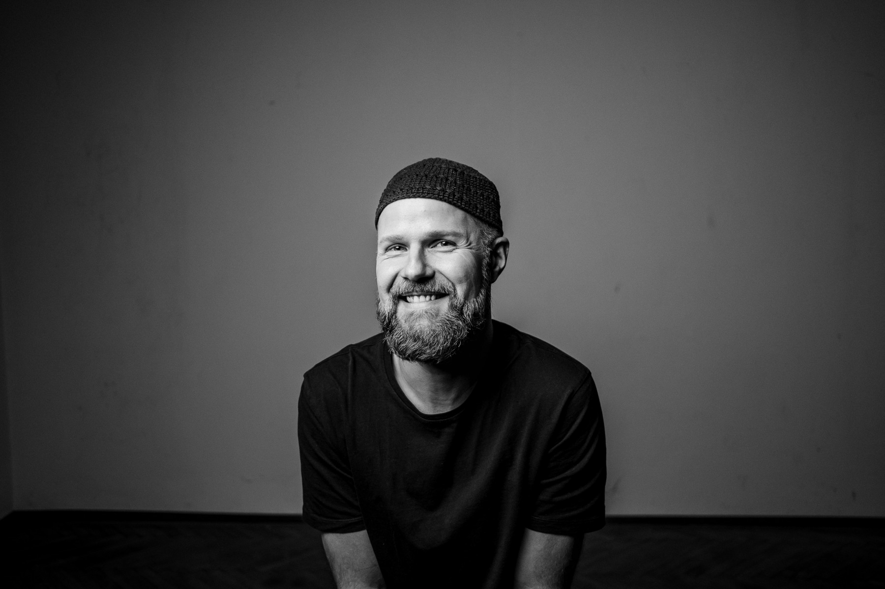

01 eine ahnung von dir
ich weiß nicht, wie man eine seele faltet,
damit sie in einen briefumschlag passt.
dir … dir?
da war ein lufthauch auf meiner schulter.
ein atemzug, der nicht meiner war.
scroll weiter, dann kommst du näher.
zurück geht es jederzeit.
du.
sieben briefe. an dich, vielleicht. an jemanden, den es noch nicht gibt.
nur aus der nähe lesbar.
ich weiß nicht, wie man eine seele faltet,
damit sie in einen briefumschlag passt.
dir … dir?
da war ein lufthauch auf meiner schulter.
ein atemzug, der nicht meiner war.

bin ich angekommen oder noch unterwegs?
warst du schon da? warst du je da?
und ich? wo bin ich?
und du? wo bist du?


ich wüsste gern deinen namen …
aber vielleicht würde er dich nur einsperren.
denn noch gehörst du keinem wort.
du bist alles dazwischen.

wenn ich schreibe, kann ich dir nah sein.
dann schreibe ich mich direkt in dein herz hinein
und dich in meins.
manchmal hätt ich dich gern
still.

im warten find ich dich nicht.
im warten findest du mich nicht.
warten war gestern.
mein leben ist heute.

was, wenn die stille deine lauteste stimme ist?
und ich dich genau dann am besten hören kann?
so falte ich meine seele wieder auf
und lass mich finden von dir.

eine gitarre aus einem kanister.
resistruments, ukraine.
gespielt von christian heidenbauer.

foto: knut ibermayr
foto: alma heigl
foto: daniel domigtermine: noch keine.
schreib uns.
wir schreiben zurück.